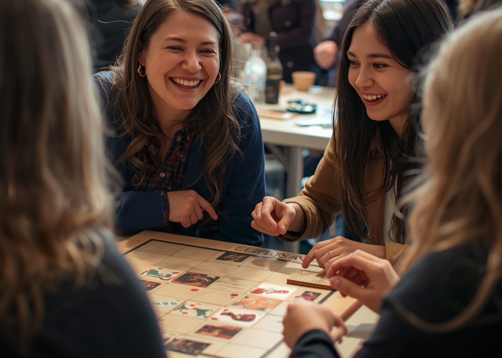

BeHeld is for adults in NYC who are ready for deeper connections and want to feel seen and be known. Curated, activity-based, and built on coming back.
BeHeld isn't. Activity-based gatherings in NYC where the same faces come back — until strangers aren't strangers.
Not ready to apply? Get the BeHeld letter — tips and activities for deepening the friendships you already have.
BeHeld is a new way to meet people and build real connections as an adult in NYC — activity-based gatherings where something real can grow the way school used to: same people, again and again. We don't force it into "friends" or "dating." You show up, and let it find its own shape.
A 3-minute application — no swiping required. It's how we learn what a good room looks like for you.
No algorithm roulette — a human match. We only move when we've found people you'd actually click with.
When we've found your people, you're invited. Same faces, again and again — that's the secret.
Every BeHeld gathering blends wine, conversation cards, and hands-on activities — so you actually meet people and go deeper than small talk.
A short application tells us who you are. Then we go looking — and the moment we've found people you'd actually click with, you get the call.
One question at a time · ~3 min · Nothing lands in your inbox until your room is ready.
TimeLeft and 222 seat you with strangers for a one-off dinner, then a new group next time. BeHeld is built on continuity: you tell us who you'd like to see again, and we put you back in the same room with them. We also swap forced dinner-table small talk for hands-on activities that reveal character — and we're built for adults in their 30s and 40s, not a 20-something crowd. We don't box it into "friends" or "dating"; you meet people and let the relationship find its own shape.
We read every application — no bots, no scoring algorithm. Then we go looking for your people: adults whose answers suggest you'd actually click. When we've curated a compatible room, you get an invite with the details. Until then, nothing lands in your inbox. That's the whole point of the waitlist — you wait once, well, instead of showing up to room after room of strangers.
Neither, exactly — and that's the point. BeHeld is about meaningful connection in NYC. We don't define it for you: some people find friends, some find a partner, some find community. You meet people who fit, and let the relationship grow at its own pace.
Mostly people in their 30s and 40s who are a little tired of dating apps and serious about building meaningful connections as an adult in NYC. Every guest is curated from a short application, so you're seated with people who actually fit.
Gatherings run in intimate NYC venues. Seats are limited on purpose, so the room stays small enough to actually get to know people. Join the waitlist and we'll invite you when your room is ready — upcoming dates live on the Events page.
Single events are $65, which covers your seat and matching. Recurring monthly membership and premium tiers are opening October 2026.
Every participant agrees to The BeHeld Code — a short agreement about how we treat each other, with serious consequences for anyone whose behavior threatens the trust of the room.